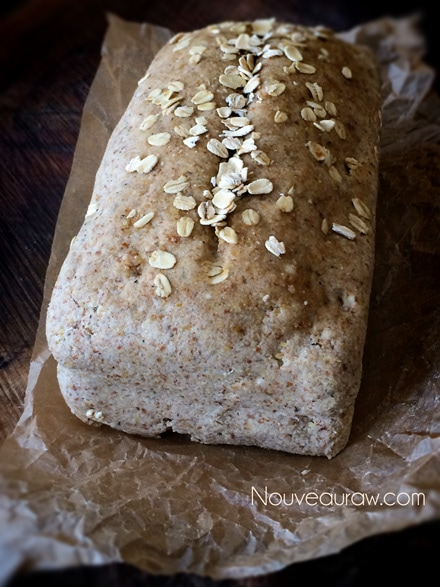
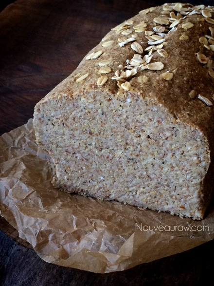
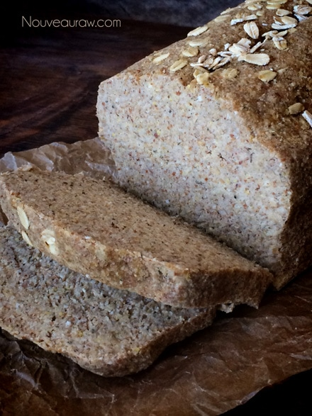

Honey Oat Cinnamon Bread

~ raw, gluten-free, vegan ~
This recipe was inspired by my Raw Honey Oat Bread that I created many years ago. I increased the measurements, omitted the Italian seasoning, replacing it with cinnamon, and changed up the flours I used. The result was perfecto’.
You do not have to knead this bread, but trust me; you NEED this bread! Hehe, Raw honey is like liquid gold to me. It is this all-natural sweetener that gives this bread a slightly sweet flavor.
Did you know that honey supports Bifidobacteria, which is present in our gastrointestinal tract? This is essential for efficient digestion and good health. Honey contains pre/probiotics that help the growth and activity of Bifidobacteria because it is an alkaline-forming food, and is similar to ingredients found in fruits. It doesn’t ferment in the stomach, and it can be used to counteract indigestion.
But here is something even more impressive that I read about honey… They make honey-infused bandages called Medihoney. It has been known to close some chronic wounds that have defied modern drugs but also acts as a protective barrier against secondary infections.
I have slathered honey on my bread before, but never on my scraped knee, I am going to remember this for my next unplanned trip. :) And trust me, I am known for tripping on flat ground. Bob loves to tease me by grabbing my elbow as we walk down the street… “ Be careful angel, the ground is flat.” lol
Anyway, back to this heavenly bread… there is something unique and beautiful when it comes to the smell of bread, and even though this bread isn’t baked in a conventional oven… the “baking” that takes place in the dehydrator emits the most incredible aroma. Aaah EAU DE bread! Bob asked/told me to put the dehydrator in our bedroom so we could smell it all night. Hehe, I came “-“ (this) close to doing so.
If you have family members who are still new and unsure of raw foods, this recipe will win them over even if you have to toast it! It won’t be raw after toasting, but it will have been made with much healthier ingredients than store-bought and also made with your love. Can’t beat that. I served this with Raw Raspberry Basil Date Jam.
yields 1 large loaf
Preparation:
- In a large mixing bowl combine; oat flour, almond flour, ground flax, psyllium husks, cinnamon, and salt.
- With your hands, mix all the dry ingredients.
- Add the almond pulp, water, honey, and lemon juice.
- Regarding the water… Start with 1 1/2 cups first and see if you need to add more. This will depend on how moist or dry the almond pulp is. I had to use 2 cups this time around.
- Mix everything with your hands, working it into a nice dough.
- To make vegan, replace the honey with a liquid sweetener of choice.
- Shape the loaf… you can shape the loaf by hand into a circular or rectangle loaf. Or like me, you can press the dough into a bread pan, shape the top, and pop it out, leaving you a beautiful looking loaf.
- Place the whole loaf on the mesh sheet that comes with the dehydrator.
- Brush honey on top of the bread and sprinkle extra oats on top.
- Dehydrate at 145 degrees (F) for 1 hour. This is to form a crunchy crust on your bread.
- Remove from the mesh sheet and place it on a cutting board.
- Slice the bread into the desired thickness.
- I cut mine about 1″ thick.
- Lay bread slices back onto the mesh sheet and continue drying for about 4-6 hrs at 115 degrees (F).
- Shelf life and storage: I recommendation to store this bread in an air-tight container, in the fridge, for 3-5 days. The more moisture that is left in your bread, the shorter the shelf life. Therefore, shelf life will vary with your drying technique. Whenever I make this bread, it never lasts very long enough to spoil. Keep in mind, the whole purpose of eating a raw diet is to eat foods at their peak of freshness, so don’t expect this bread to have an extended expiration date. This bread will also freeze wonderfully.
Culinary Explanations:
- Why do I start the dehydrator at 145 degrees (F)? Click (here) to learn the reason behind this.
- When working with fresh ingredients, it is essential to taste test as you build a recipe. Learn why (here).
- Don’t own a dehydrator? Learn how to use your oven (here). I do, however honestly believe that it is a worthwhile investment. Click (here) to learn what I use.



© AmieSue.com